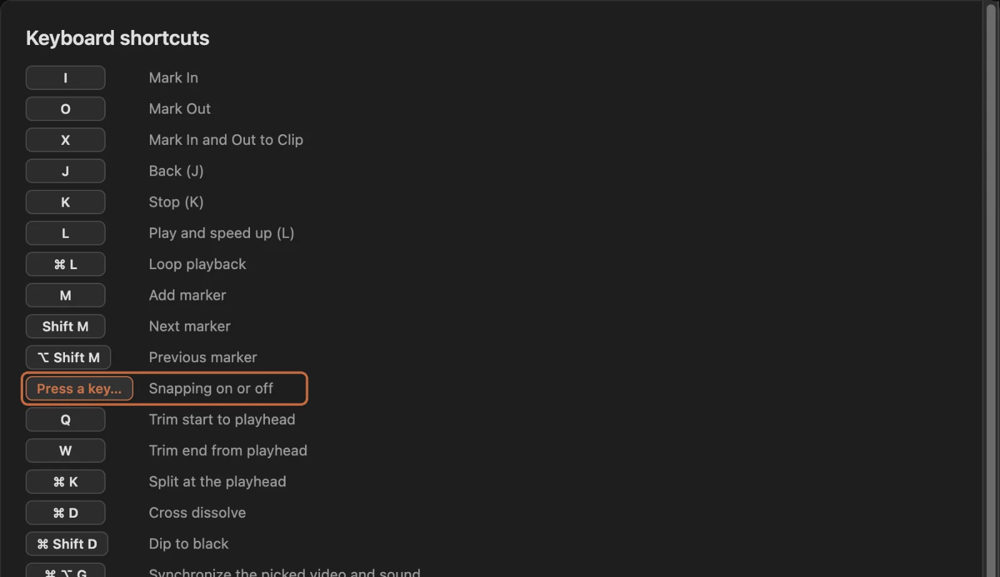

Keyboard shortcuts
Press Shortcuts in the top bar for the shortcut sheet. Every key can be changed, and you can start from the keys of the program you know.

The table shows Kilnframe's own keys on a Mac. On Windows and Linux, ⌘ is Ctrl and ⌥ is Alt.
Playing and moving
| Key | What it does |
|---|---|
| Space | Play / pause |
| J K L | Back, pause, play (again: 2x, 4x) |
| ← → | One frame back / on |
| ⌘ L | Loop In to Out |
| ⇧ M | Next marker |
| 1 2 3… | Multicam: switch to that camera or person; 0 the wide shot |
Marking
| Key | What it does |
|---|---|
| I O | Set In / Out |
| X | In and Out around the picked clip |
| M | Marker at the playhead |
Editing
| Key | What it does |
|---|---|
| V C P H | Select, Razor, Pen, Hand |
| R T Y A ⇧ T | Rate Stretch, Roll, Slip, Track Select Forward, Text |
| ⌘ K | Split at the playhead |
| Q W | Trim the piece to the playhead (start / end) |
| ⌘ D, ⇧ ⌘ D | Cross dissolve, dip to black |
| ⇧ F | Freeze the frame at the playhead |
| ⇧ E | Turn the picked clips off or on |
| ⌥ ⌘ G | Synchronize the picked video and sound |
| ⌥ ⌘ ← ⌥ ⌘ → | Move the piece earlier / later |
| ⌘ Z, ⇧ ⌘ Z | Undo, redo |
View
| Key | What it does |
|---|---|
| = - \ | Zoom the timeline in, out, fit the whole video |
| N | Snapping on / off |
| ⇧ S | Sound while dragging the playhead |
| ⌘ ' | Overlays on / off |
| ⇧ D, ⇧ W | Before, split view |
| ⇧ ⌘ F | Viewer full screen |
| ⇧ K, ⇧ V | Keyframe lanes, multicam angles |
| ⌘ F | Find in the transcript |
| ⇧ ⌘ E | Export the frame |
The menu bar keeps its own keys: ⌘ N New Project, ⌘ O Open, ⌘ S Save, ⌘ I Add Files, ⌘ E Export and ⌘ , Settings.
Change a key
- Start from a setStart from: Kilnframe, Premiere Pro, Final Cut Pro, DaVinci Resolve or CapCut. Settings › General › The program you are used to chooses the same, with the panels too.
- EditPress Edit Shortcuts, click a shortcut and press the new key (Press a key…). Esc gives up. If the key belonged to something else, that one now has none, and the sheet says so.
- FinishDone. Restore Defaults puts every key back.
Space, the arrows, Delete, copy, paste, undo and the camera numbers stay as they are, and the menu bar's keys cannot be taken.